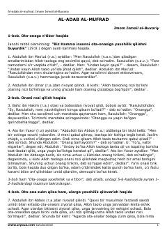

AAImom Buxoriyning islom axloqi va ota-onaga hurmat haqidagi mashhur hadislar to'plami.
Ushbu asar buyuk muhaddis Imom al-Buxoriy tomonidan yozilgan bo'lib, unda islom axloqi, ota-onaga hurmat va boshqa insoniy fazilatlar haqidagi hadislar to'plamlari keltirilgan. Kitob kitobxonlarga go'zal axloq tamoyillarini o'rgatish va kundalik hayotda ularga amal qilishni targ'ib qiladi. Matn davomida turli sahobalar rivoyat qilgan hadislar va ularning qisqacha sharhlari bayon etilgan.